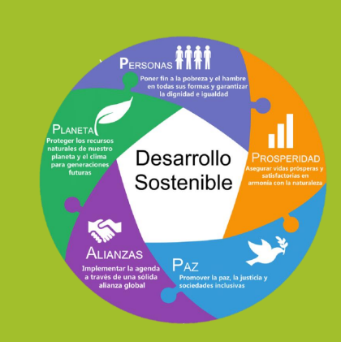
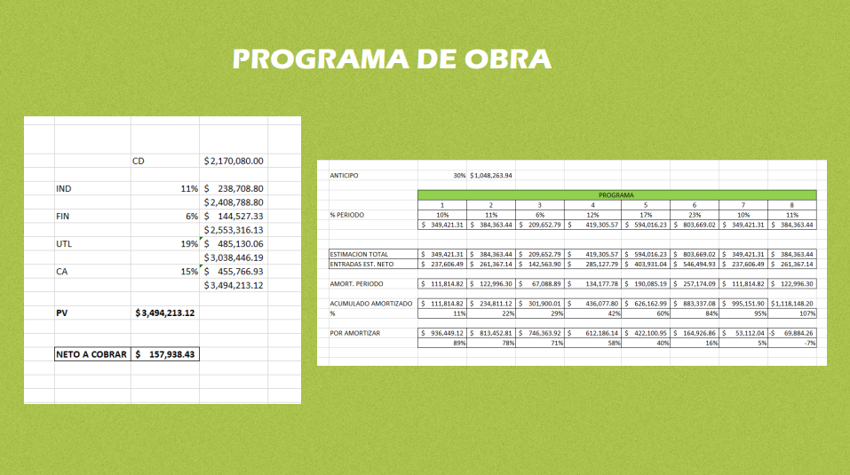

INTEGRANTES
Lic. Misael Arevalo
Ing. Aaron Gomez
Ing. Antonio Alonso
Ing. Diego García
Ing. Diego Romero
Ing. Italia Venegas
Ing. Jeshua Aquino
Ing. Johan Huerta
Ing. Juan Carlos Contreras
Ing. Mauricio Calderón

Son aquellas de origen vegetal o mineral y tienen características comunes, aunque dependen del tipo de material con el que están compuestos:
• Son totalmente respetuosas con el medio ambiente, ya que son biodegradables y 100% sostenibles.
• Son aptas para personas con sensibilidad a los productos químicos, alergias, intolerancias y fatiga crónica.
• Tienen una importante higroscopicidad, por lo que al ser permeables al vapor de agua, contribuyen eficazmente a regular la humedad de la habitación.
• Mantienen un buen aislamiento térmico.
• Su olor es agradable.
Es un material 100% natural. Es completamente reciclable y su eliminación no contamina el medio ambiente. En el campo de la bioarquitectura, es uno de los materiales de construcción por excelencia:
• Su transformación requiere un mínimo consumo energético.
• Sus desechos son biodegradables y reciclables, ya que es un material orgánico.
• Es un excelente aislante térmico, colaborando así en el ahorro energético y la eficiencia energética.
• La bioconstrucción en madera se alza como la mejor opción para dejar a las futuras generaciones un ecosistema más limpio y sano.
Al igual que en el caso de los impermeabilizantes, las posibilidades de reciclaje y reutilización de las llantas pueden impulsar nuevas actividades económicas, liberándolas del flujo de desechos y evitando la emisión de contaminantes y agentes nocivos al medio ambiente. Las llantas viejas se pueden usar como material de construcción. El producto puede durar de 7 a 10 años antes de recubrirse nuevamente. Es respetuoso con el medio ambiente y económico, proporcionando un ahorro promedio del 66% en comparación con otros productos impermeabilizantes de hule de llantas.
Puedes lograr cualquier patrón de piedra, ladrillo o texturas con líneas rectas, curvas o simulaciones de mamposterías increíbles con herramientas sencillas:
• En la construcción de tus muros, no será necesario preocuparte por el aspecto del paramento, ya que este será recubierto, lo cual te permitirá construir más rápido.
• Redecora cualquier espacio y logra ambientes completamente diferentes gracias a la gran variedad de colores y texturas que se pueden obtener.
• La pasta se puede utilizar en interiores y exteriores, es resistente a condiciones de humedad y asoleamiento prolongados, por lo que tu acabado estará ahí por mucho tiempo.
CAPÍTULO III DE LOS CRITERIOS DE DISEÑO ESTRUCTURAL
● ARTÍCULO 146.- Toda edificación debe contar con un sistema estructural que permita el flujo adecuado de las fuerzas que generan las distintas acciones de diseño, para que dichas fuerzas puedan ser transmitidas de manera continua y eficiente hasta la cimentación. Debe contar además con una cimentación que garantice la correcta transmisión de dichas fuerzas al subsuelo considerando las condiciones en materia de hundimientos, emersiones, agrietamientos del subsuelo, oquedades o galerías de minas.
● ARTÍCULO 147.- Toda estructura y cada una de sus partes deben diseñarse para cumplir con los requisitos básicos siguientes:
○ I. Tener seguridad adecuada contra la aparición de todo estado límite de falla posible ante las combinaciones de acciones más desfavorables que puedan presentarse durante su vida esperada, y
○ II. No rebasar ningún estado límite de servicio ante combinaciones de acciones que corresponden a condiciones normales de operación. El cumplimiento de estos requisitos se comprobará con los procedimientos establecidos en este Capítulo y en las Normas. Los criterios generales de diseño aplicables a todos los tipos de estructuras se definen en las Normas sobre Criterios y Acciones de Diseño.
● ARTÍCULO 150.- En el diseño de toda estructura deben tomarse en cuenta los efectos de las cargas muertas, de las cargas vivas, del sismo, del viento cuando este último sea significativo. Las intensidades de estas acciones y sus combinaciones habrán de considerarse en el diseño y la forma en que deben calcularse sus efectos se especifican en las Normas correspondientes.
● ARTÍCULO 151.- Se considerarán tres categorías de acciones, de acuerdo con la duración en que obren sobre las estructuras con su intensidad máxima, las cuales están contenidas en las Normas correspondientes.
● ARTÍCULO 152.- Cuando deba considerarse en el diseño el efecto de acciones cuyas intensidades no estén especificadas en este Reglamento ni en sus Normas, estas intensidades deberán establecerse siguiendo los procedimientos aprobados.
● ARTÍCULO 153.- La seguridad de una estructura debe verificarse para el efecto combinado de todas las acciones que tengan una probabilidad no despreciable de ocurrir simultáneamente, considerándose dos categorías de combinaciones que se describen en las Normas.
Para lograr un desarrollo sostenible, es necesario tener en cuenta aspectos estructurales en la planificación y diseño de diferentes sistemas, ya sean edificios, ciudades, infraestructuras o incluso sistemas económicos. Los aspectos estructurales contribuyen a reducir el impacto ambiental de los edificios y mejorar su desempeño a lo largo del tiempo.
El desarrollo sostenible se ha convertido en uno de los principios más importantes para planificar los proyectos de infraestructura civil, donde se tomen estrategias para la conservación del medio ambiente y que estos proyectos no impacten tanto a la naturaleza. Por lo tanto, es importante que las empresas constructoras sean una sociedad responsable donde cada una de ellas tome medidas sostenibles contribuyendo a mejorar las condiciones ambientales. Considerar el desarrollo sostenible en nuestros proyectos de infraestructura civil es beneficioso tanto para la sociedad civil como para el medio ambiente, ya que satisface nuestras necesidades sin poner en peligro las oportunidades de las generaciones futuras. La ingeniería civil es una de las carreras más importantes que se relaciona con la mayor parte de los problemas que enfrenta el mundo para satisfacer a la sociedad, como el aspecto económico, social y ambiental.
Se conoce como acabados, revestimientos o recubrimientos a todos aquellos materiales que se colocan sobre una superficie de obra negra. Es decir, son los materiales finales que se colocan sobre pisos, muros, plafones, azoteas, obras exteriores o en huecos y vanos de una construcción.
La probabilidad y la estadística desempeñan un papel esencial en el desarrollo sostenible al proporcionar herramientas para la recopilación de datos, el análisis, la evaluación de impacto y la toma de decisiones informadas. Estas disciplinas ayudan a comprender mejor los desafíos y oportunidades relacionados con la sostenibilidad y facilitan la adopción de enfoques basados en evidencia para lograr un desarrollo equitativo y respetuoso con el medio ambiente.
Ahora, exploremos los procesos químicos detrás de los acabados ecológicos. Por ejemplo, las pinturas naturales a base de ingredientes orgánicos son una alternativa ecológica a las pinturas convencionales. Estas pinturas no contienen productos químicos tóxicos y son más seguras para la salud y el medio ambiente. Otros ejemplos incluyen revestimientos de madera sostenible y suelos fabricados con materiales reciclados.
Se obtiene como resultado del procesamiento de materia de origen orgánico y mineral, como raíces, almidón de patata, hojas, corteza de árbol, aceites, ceras, etc., combinados con otros elementos como agua, tierra o talco. Aunque se ha avanzado mucho en su fabricación, y ya hay fabricantes que ofrecen pinturas vegetales para exterior, su utilización está indicada, principalmente, para interior.
Su componente principal es la arcilla de distintos colores y se utiliza no sólo para enlucido de muros (última capa), sino también para las capas anteriores a ésta como mortero, o revoco de arcilla. Esta pintura es muy decorativa ya que ofrece todas las tonalidades que proporcionan las tierras de nuestra diversidad geográfica. Su aplicación es sencilla y nos dan una excelente cobertura, pero es más delicada que las dos anteriores y no soporta bien el agua, por lo que está indicada para su utilización en interiores.
El generador es un dispositivo que convierte la energía mecánica en energía eléctrica. Su funcionamiento se basa en la inducción electromagnética debido al movimiento relativo entre un campo magnético y una bobina que gira en el interior del campo. Funciona con combustible para crear dicho movimiento y luego transformarlo en electricidad mediante el principio de inducción electromagnética.
La potencia se calcula al sumar la potencia de todos los aparatos a utilizar la energía proveniente del generador. Para realizar dicho cálculo, se deben tener en cuenta los dos tipos de potencias que existen:
Potencia inductiva: Es la potencia que los aparatos a motores de giro necesitan para funcionar. Por ejemplo: neveras, lavadoras, bombas, etc. Para su arranque, es necesario 4 veces la potencia nominal de su uso.
Potencia de resistencia: Es la potencia que requieren los aparatos como bombillos, focos, etc. Por lo general, es la potencia señalada en cada aparato.
La suma total de todos estos artefactos da como resultado 3,641 W. Al dividirlo entre 1,000, se obtiene: 3.6Kva. Por medida de seguridad, es recomendable que un generador eléctrico mantenga un margen de producción del 20%. Es decir, si la potencia del generador es de 3,0Kva (3,000 watts), se recomienda mantener el consumo hasta un máximo del 80% (2,400 watts), dejando un 20% (600 watts) de reserva.
En vista de todo lo que hemos explicado, lo más recomendable es utilizar un generador con una potencia de al menos 3,000 W (3.0Kva) para tu hogar (a menos que sea un generador con salida de 220v).
Lo ideal es que el generador tenga 4,000 W de potencia de arranque (para encender los artefactos) y entre 3,000 y 3,500 W de potencia continua para mantener los artefactos eléctricos en funcionamiento.
La ingeniería civil necesita implementar el concepto de desarrollo sostenible donde se determinen principios ambientales que permitan crear nuevas herramientas para la planificación de nuevos proyectos de infraestructura sostenible. Por lo tanto, es importante enfocarse en los aspectos más importantes para involucrar la sostenibilidad en las etapas de la construcción, tomar conciencia de los principios de sostenibilidad ecológica y desarrollar estrategias de sustentabilidad.
Son aquellos que se desgastan por su consumo, pero se regeneran rápidamente de forma natural o por acción humana. Además, estos recursos se caracterizan por ser sustentables.
Son aquellos que una vez que se utilizan para el consumo, no es posible su renovación o requieren miles o millones de años.
Hablemos de los costos y precios asociados con los acabados ecológicos. Aunque inicialmente pueden tener un precio ligeramente superior, a largo plazo, resultan rentables. La durabilidad de los materiales ecológicos y el ahorro de energía que proporcionan pueden compensar el costo adicional de su producción y adquisición.

Esperamos que se sientan comodos con la pagina y les haya gustado la investigacion.
En resumen, los acabados ecológicos en construcción nos brindan la oportunidad de crear hogares personalizados que reflejen nuestro estilo de vida, al tiempo que cuidamos el medio ambiente. Recordemos que cada elección que hacemos puede marcar la diferencia. Juntos, podemos construir un futuro más sostenible y armonioso.